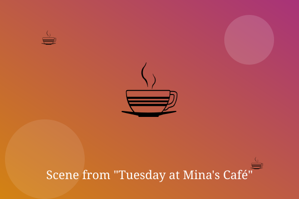

Chapter 1: Extra Foam

Mina opened the shutters at seven and turned on the radio. Her first customer was an old man who always asked for extra foam.
At nine, a student arrived with a laptop and a worried face. Mina quietly added a free cookie to the order.
Nothing big happened that Tuesday. But by closing time, Mina felt like she'd been part of ten small stories.
— End of Chapter —